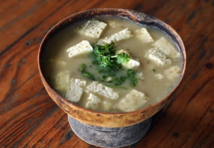

Algunos consideran que este plato típico de la costa se originó como una derivación del “mote de candela” que sirvió de alimento en la hambruna en época de “La guerra de los mil días” y con el paso del tiempo se ha ido adaptando hasta convertirse en lo que hoy conocemos como el mote de queso. Esta sopa está compuesta por ñame espino, ñame criollo, yuca, suero costeño, queso costeño, hojas de bleo, berenjena y chicharrón.
